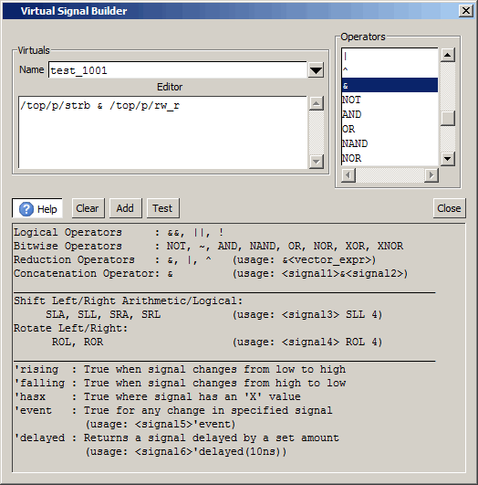
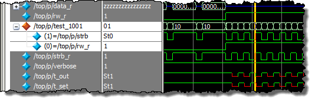

Use the following
procedure to create a virtual signal with the Virtual Signal Builder.
Procedure
- Select from
the main menu to open the Virtual Signal Builder dialog box.
- Drag one or more objects from
the Wave or Object window into the Editor field.
- Modify the object by double-clicking
on items in the Operators field or by entering
text directly.
Tip Select the Help button then
place your cursor in the Operator field to view syntax usage for
some of the available operators. Refer to Figure 1
- Enter a string in the Name field.
Use alpha, numeric, and underscore characters only, unless you are
using VHDL extended identifier notation.
- Select the Test button
to verify the expression syntax is parsed correctly.
- Select Add to
place the new virtual signal in the Wave window at the default insertion
point. Refer to Inserting Signals in a Specific Location for more information.
Figure 1. Creating a Virtual Signal.
Results
The virtual signal is added to the
Wave window and the Objects window. An orange diamond marks the
location of the virtual signal in the wave window. (Figure 2)
Figure 2. Virtual Signal in the
Wave Window